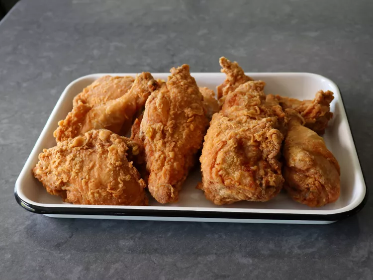

Dooky Chase-Style Fried Chicekn

Description
I'm going to show you my version of the famous New Orleans restaurant's famous fried chicken,
Dooky Chase-Style Fried Chicken, and although it is shockingly simple, it is likely the most
beautiful and delicious fried chicken you will ever make at home.
Ingredients
- 4 teaspoons fine salt
- 2 teaspoons freshly ground black pepper
- 1 teaspoon garlic powder
- 1/2 teaspoon cayenne pepper
- 3 large eggs
- 1/4 cup water
- 1 (4 pound) whole chicken
- 2 quarts vegetable oil for frying
Seasoned Flour
- 2 cups all-purpose flour
- 1 teaspoon salt
Instructions
- Mix together 4 teaspoons salt, black pepper, garlic powder, and cayenne in a small bowl; set aside.
- Whisk eggs, water, and 2 tablespoons of spice mix thoroughly together in a mixing bowl large enough
to hold all chicken pieces.
- Cut whole chicken into serving-size pieces, ending up with 2 breast halves, 2 thighs, 2 drumsticks,
and 2 wings. Alternately, you can use 4 pounds of bone-in, skin-on pre-cut chicken pieces.
- Add chicken pieces to the egg marinade and toss thoroughly until evenly coated. Press and compact
chicken pieces down into the bowl so they are covered with marinade.
- Cover with plastic, and marinate in the refrigerator for 12 to 24 hours. Toss chicken pieces several
times during the marinating process.